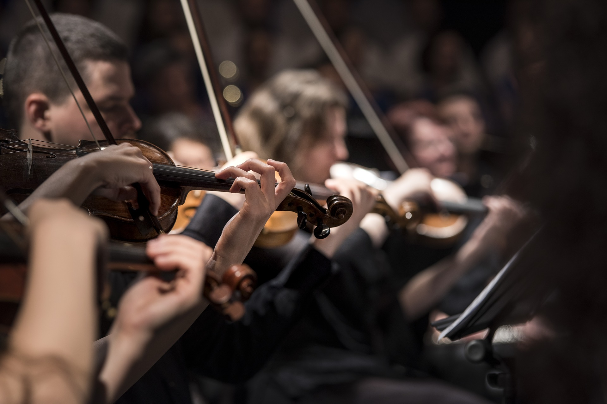

Mujeres y música
El funcionamiento de las orquestas y la tradición continúan marcando la composición de instrumentistas en las formaciones profesionales. Las mujeres son mayoría estudiando en los conservatorios pero sólo son 3 de cada 10 instrumentistas en las orquestas europeas. En numerosas agrupaciones, los instrumentos de percusión y de viento metal (tubas y trombones, principalmente) no cuentan con ninguna mujer en sus filas.
Sala Dorada del Musikverein, Austria, 12 del mediodía del 1 de enero de 2019. Como cada año desde 1941 la Orquesta Filarmónica de Viena se prepara para interpretar el concierto de año nuevo. Al frente de la orquesta este año está el director berlinés Christian Thielemann. En la sala asisten al recital 2.044 personas. A través del televisor espera una audiencia media de más de 50 millones de telespectadores en 95 países.
Dos horas después los titulares de la prensa son claros: éxito de dirección e interpretación de las 20 composiciones escuchadas. Ningún medio destaca que durante el concierto sólo hay 11 mujeres tocando entre los 138 instrumentistas que componen esta orquesta creada en 1842.
Este año se cumplen 22 desde que, el 27 de febrero de 1997, la Orquesta Filarmónica de Viena decidiese en asamblea general la admisión de mujeres en el conjunto. Esta acción, el fin del veto que impedía a mujeres instrumentistas acceder a una de las orquestas más prestigiosas del mundo, se consideró un paso clave para acabar con una practica machista en la música profesional. Sin embargo, a día de hoy, sólo 1 de cada 10 instrumentistas en esta orquesta son mujeres.
La Orquesta Filarmónica de Viena no es un caso aislado en el mundo de la música. El funcionamiento y la tradición que imperan en estos círculos dificulta la presencia de mujeres instrumentistas en las filas de las agrupaciones profesionales. Los instrumentos y la música profesional hasta hace pocas décadas ha sido un asunto casi exclusivamente masculino. Antes del siglo XX no hay referentes de mujeres en los instrumentos que componen una orquesta clásica.
En la actualidad la media de mujeres instrumentistas en orquestas europeas es del 35%. En campos específicos como los instrumentos de percusión o los instrumentos de viento metal (trompa, trompeta, trombón y tuba), en muchas de las agrupaciones, no hay presencia de mujeres.
A medida que se avanza en la carrera profesional (estudios, jóvenes orquestas y orquestas profesionales), el número de mujeres instrumentistas desciende. Las mujeres son el 55% de los estudiantes de conservatorio. Su presencia desciende al 46% en jóvenes orquestas y alcanza el 34% de instrumentistas en orquestas españolas (casi en la media europea, que está en el 35%).
“La música es arte que practican personas sensibles. Arte entonces, que encaja a la perfección en las expectativas puestas en las mujeres. Así que ahí está la respuesta a que en los conservatorios seamos mayoría” explica Dori Cañadas Trancón, educadora social y experta en género. “Las mujeres nos topamos con problemas cuando queremos avanzar, promocionar profesionalmente, y por tanto, ocupar puestos de importancia. Ahí es donde las mujeres encontramos la barrera” añade.
En España los estudios profesionales de música se llevan a cabo a través de los conservatorios. Del total de países europeos, España es el país que cuenta con mayor número de centros profesionales de enseñanza musical, 197 en total.
El 55% de los estudiantes en los conservatorios son mujeres. Ellas son mayoría en los estudios de nueve instrumentos: violín, viola, violonchelo, flauta, oboe, clarinete, fagot, piano y arpa. En el caso de violín, viola, violonchelo, flauta, oboe, piano y arpa más del 60% de los estudiantes son mujeres, en el caso de la flauta el 77% y en los estudios de arpa el 88%.
La presencia de mujeres en instrumentos desciende cuando se accede a formaciones jóvenes. En estos casos, las mujeres son el 46% de los instrumentistas de jóvenes orquestas. También desciende el número de instrumentos en los que ellas son mayoría, de nueve a seis. En jóvenes orquestas españolas, las mujeres son mayoría en: violines, violas, violonchelos, flautas, oboes y arpas. En instrumentos de viento metal, como la trompeta, el trombón, la tuba, e instrumentos de percusión las mujeres tienen una presencia de entre el 6% y el 9%.
Las mujeres instrumentistas alcanzan cifras mínimas en las orquestas sinfónicas. En las agrupaciones españolas poco más de 3 de cada 10 instrumentistas, el 34%, son mujeres. Del conjunto de instrumentos que componen las orquestas sinfónicas (violines, violas, violonchelos, contrabajos, flautas, oboes, clarinetes, fagotes, trompas, trompetas, trombones, tubas, percusiones, pianos y arpas) las mujeres sólo son mayoría en arpa. Un instrumento que no se encuentra en la totalidad de las orquestas.
En los instrumentos como la trompa, la trompeta, el trombón, la tuba y los instrumentos de percusión no hay ni una mujer por cada diez hombres. Las mujeres tienen una presencia de entre el 2% y el 7%. En cifras generales, de estudiantes a instrumentistas en orquestas sinfónicas profesionales, la presencia de mujeres se reduce un 21%.
En un estudio realizado en 2010 por el Grupo MUSYCA de la Universidad Complutense de Madrid (UCM) sobre la participación de las mujeres en las orquestas profesionales españolas, el dato de la presencia de mujeres en orquestas era del 32%, como en la actualidad, una de cada tres.
Aunque las cifras son bajas, Silvia Sanz Torre, directora de la Orquesta Metropolitana de Madrid, asegura que la situación es mejor que hace unos años. “En las ultimas décadas se ha producido un cambio sustancial en la composición de las orquestas y la inclusión de mujeres en ellas. A pesar de ello, sigue existiendo un desfase numérico entre las mujeres que comienzan los estudios superiores de un conservatorio y las que forman parte de agrupaciones profesionales”.
Silvia Sanz dirige una de las agrupaciones españolas más igualitaria, las mujeres son el 46% de la orquesta. Para ella, un factor que explica ese descenso es la falta de motivación pedagógica, “a pesar de los cambios y evolución cultural todavía hay mucho que hacer en las etapas intermedias y superiores de los estudios instrumentales. Según vamos avanzando es real esa disminución, que quizás podríamos achacar a la poca motivación por parte de los pedagogos o, en algunos casos más extremos, a la desmotivación por parte de estos a las alumnas alegando un mundo donde se encontrarán con muchas trabas”.
Para Leandro Lorrio, director del Conservatorio Oficial de Música "Hermanos Berzosa" de Cáceres, “la situación de las mujeres instrumentistas de orquestas es totalmente injusta e insostenible porque no tiene nada que ver con la presencia de la mujer en los conservatorios”.
Con más de 25 años de experiencia como profesor, Lorrio considera que la razón de la disminución de mujeres según se avanza en la carrera musical se debe a la tradición, “no tiene sentido la situación actual y sólo tiene explicación por el patriarcado que ha habido en España y que todavía las orquestas profesionales están dirigidas o gestionadas por hombres en un porcentaje mucho mayor”.
Las orquestas españolas se sitúan un punto por debajo de la media europea, que alcanza un 35% de mujeres instrumentistas en sus formaciones. Según los datos analizados, sólo cuatro países de 39 tienen mayoría de mujeres instrumentistas. En el caso de Bulgaria, Bosnia y Herzegovina, Montenegro e Islandia, algo más de 5 de cada 10 instrumentistas son mujeres.
Austria es el país con menor porcentaje de mujeres instrumentistas con un 19%. No llegan a ser ni 2 de cada 10 instrumentistas. Le siguen con menos presencia de mujeres en sus formaciones las orquestas de Alemania e Italia con un 22%. De los 39 países analizados, 26 se encuentran por encima del 35% de media europea, respecto a la proporción de mujeres en las agrupaciones profesionales.
Seis, de las 103 orquestas europeas analizadas, cuentan entre sus instrumentistas con mayoría de mujeres: Orquesta Filarmónica de Ruse (Bulgaria), Orquesta Filarmónica de Sarajevo (Bosnia y Herzegovina), Orquesta Sinfónica de Montenegro, Orquesta Sinfónica de Islandia, Orquesta Sinfónica de Liepaja (Letonia) y Real Orquesta Nacional Escocesa.
De las 103 orquestas incluidas en el análisis, 51 cuenta en sus filas con más del 35% de mujeres. La mayoría de las que superan la media se encuentran en el rango del 36-42% de mujeres instrumentistas. De las 52 orquestas que se encuentran por debajo de la media, la mayor parte cuentan con entre el 26-32% de mujeres entre sus filas.
La Orquesta Filarmónica de Viena (Austria) tiene en su formación un 11% de mujeres instrumentistas, y la Orquesta Filarmónica de Berlín (Alemania) y la Orquesta Filarmónica Checa tienen ambas un 16%. Estas tres orquestas son consideradas de las más prestigiosas del mundo.
A la hora de iniciar el aprendizaje, la elección de un instrumento musical suele estar condicionada por: los gustos de los padres, las influencias de amigos, la disponibilidad del instrumento en la banda de música, los estereotipos de género, los factores económicos, decisión del director de la banda en cuanto al equilibrio instrumental, la tradición cultural del entorno, etc.
En una investigación realizada en 2013 sobre los factores determinantes de la elección del instrumento musical en la que se analizaron diferentes recursos y análisis sobre el tema, ya se pone de manifiesto que existen considerables diferencias entre el género y la elección del instrumento. Mientras que ellas suelen elegir instrumentos de viento madera, ellos suelen preferir los de viento metal y percusión.
“Existe todavía desgraciadamente una tradición en cuanto a instrumentos más masculinos o más femeninos, algo que personalmente me molesta enormemente. Entre los instrumentos que normalmente no eligen las niñas al entrar en un conservatorio están los metales, la percusión o el contrabajo” afirma la directora de orquesta Silvia Sanz.
Desde antes de nacer, “la sociedad genera unas expectativas en nosotras y nosotros”, todas ellas vinculadas a nuestro sexo, explica la experta en género Dori Cañadas. “El género, construcción social y cultural que define cómo deben ser y comportarse las personas dependiendo de si son hombres o mujeres, condiciona nuestra vida, y por lo tanto, todas las elecciones que tomamos. Es por esto, que nos socializamos viendo normal que hay 'cosas de chicas' y 'cosas de chicos'”.
“Ya Amelia Valcárcel con su Ley del Agrado, nos contaba que es obligación nuestra, de las mujeres, agradar. Y para ello, se nos adjudican cualidades que vayan acorde con dicho objetivo, tales como la sensibilidad, delicadeza, fragilidad, belleza, cuidados y amor, mucho amor para todo el mundo, menos para ella. Esta misión, condiciona las decisiones que tomamos”. Es decir, estos factores condicionan la decisión de elegir uno u otro un instrumento.
Las mujeres son menos en los estudios de viento metal y percusión, respecto a otras especializaciones, y aún menos en las orquestas. Julio Sánchez-Andrade Fernández, jefe del departamento de viento metal y percusión del Conservatorio Superior de Música "Eduardo Martínez Torner" de Oviedo, considera que hay menos mujeres en estos estudios por elección personal “El motivo de que haya menos alumnas en algunas especialidades es que lo eligen menos mujeres que hombres; no creo que haya otra: es un asunto de elección personal. Se presentan muchas menos mujeres que hombres a las pruebas de acceso a grado superior”.
Esta tendencia sigue manifestándose en las agrupaciones actuales de las orquestas. Las mujeres, en su mayoría, ocupan puestos de cuerda (violín, viola, violonchelo, contrabajo, arpa y piano) y de viento madera (flauta, fagot, clarinete y oboe). Mientras que los hombres componen, como se observa en los datos de orquestas europeas, el 90-100% de los instrumentistas de viento metal (trompa, trompeta, trombón y tuba) y percusión.
La composición de los instrumentos de viento metal y percusión de las orquestas está marcada por las pocas plazas que hay en las formaciones para estas especialidades, en la mayoría hay un puesto por instrumento. “La situación en viento metal y percusión es especial porque al haber tan pocas plazas en una orquesta profesional se reducen las posibilidades de encontrar trabajo independientemente del sexo, pero se agrava en las mujeres” explica el director de conservatorio Leandro Lorrio.
Esas plazas están vinculadas a las audiciones que las orquestas realizan para formar las agrupaciones. Desde hace más de 40 años, muchos países utilizan un telón o cortina para separar visualmente al jurado del candidato. En ocasiones, pero menos frecuente, también se utilizan alfombras para no identificar el sonido de las pisadas.
“Existe todavía desgraciadamente una tradición en cuanto a instrumentos más masculinos o más femeninos, algo que personalmente me molesta enormemente. Entre los instrumentos que normalmente no eligen las niñas al entrar en un conservatorio están los metales, la percusión o el contrabajo” afirma la directora de orquesta Silvia Sanz.
El uso de la cortina, obligatorio en algunos países, favorece la igualdad de oportunidades, ya sea de género, origen u otras características. Varios estudios han demostrado que esta medida aumenta las posibilidades de una mujer de pasar de ronda en las audiciones en un 50%.
Sin embargo, para algunos profesionales de la música esta técnica de audición puede tener su parte negativa. El profesor Julio Sánchez-Andrade considera que las barreras visuales deterioran la calidad del sonido y se pierde la parte gestual del intérprete que también forma parte del mensaje. “No me puedo creer que un tribunal pueda aceptar mejor a un intérprete por ser hombre o mujer o por su aspecto físico. Desde una perspectiva actual, yo no me lo planteo” afirma.
Si se comparan los datos actuales con los de 2010 del estudio elaborado por el grupo de investigación MUSYCA de la UCM, se observa un ligero aumento en la proporción de mujeres por grupo de instrumentos en las orquestas profesionales. Sin embargo, salvo en el grupo de instrumentos de cuerda donde hay cuatro mujeres por cada diez instrumentistas, en el resto de grupos de instrumentos (viento madera, viento metal y percusión) las mujeres siguen siendo minoría.
Carmen Minguez Lucas-Torres empezó a tocar el trombón porque vio a un amigo de su padre con el instrumento. “Recuerdo cómo me gustó su gran sonido, como con el movimiento de la vara se podían tocar todo tipo de melodías y también como brillaba su color dorado. Fue este amigo nuestro el que me enseñó las primeras, principales y más importantes nociones sobre el instrumento”.
Carmen es la primera mujer en finalizar el Grado Superior de Trombón en el Real Conservatorio Superior de Música de Madrid en 1998. Ha participado en numerosas orquestas profesionales, como la Orquesta Chamartín, la Orquesta Sinfónica de Mujeres, la Orquesta Metropolitana de Madrid, la Orquesta Sinfónica del Mediterráneo, y ha sido profesora en numerosos conservatorios profesiones y escuelas municipales de música.
Sobre la situación de las mujeres en instrumentos de viento metal, Carmen asegura que “todo está por andar... Los instrumentos de viento metal siempre se han considerado de hombres, ya sea por su tamaño, su peso, etc. En tiempos pasados las mujeres tenían poca visibilidad en el ámbito instrumental de la música, aun siendo excepcionales instrumentistas. Por lo general tocaban instrumentos como el piano o la cuerda mostrando así a una mujer refinada o delicada. El trombón era impensable, era rudo o basto para una mujer. Hoy en día, las mujeres que seguimos luchando por la igualdad de oportunidades no tocamos un instrumento por lo delicado que sea, tocamos lo que nos gusta sin prejuicios al qué dirán”.
Carmen no cree haber sufrido discriminación por ser mujer durante sus años de formación. Guarda buen recuerdo tanto de los profesores, como de los compañeros. En la etapa profesional, como profesora, no ha parado de trabajar en escuelas y conservatorios desde que comenzó hace 20 años.
El único ámbito donde ha encontrado dificultades ha sido a la hora de tocar en orquestas. “Aunque es verdad que he tocado en ellas en muchas ocasiones, a veces puede que se hayan llamado entre ellos antes que a mí, a veces por discriminación y a veces por motivos únicamente de cercanía personal”.
Al contrario que en otros instrumentos, las mujeres que tocan instrumentos de viento y sobre todo viento metal, es habitual que no puedan tocar hasta el final del embarazo por el esfuerzo que requiere la presión de la columna de aire que se forma en el lugar donde está el feto. “Después del nacimiento, el bebé necesita tiempo y atención, y nuestro cuerpo requiere un periodo de recuperación, por lo tanto no se le pueden dedicar las mismas horas de estudio a tu instrumento que un hombre que ha sido padre”. Este periodo de ausencia pasa factura, “al quedarnos embarazadas no es posible tocar a veces a un alto nivel y, ese tiempo que no se está al 100%, pasa factura en las pruebas de acceso a orquestas u oposiciones”.
Ana Isabel Delgado Martín eligió el trombón porque era el instrumento que faltaba en la banda del pueblo. Desde aquellos inicios, Ana Isabel ha formando parte de formaciones como la Joven Orquesta de la Comunidad de Madrid, la Joven Orquesta Nacional de España, la Orquesta Juvenil Iberoamericana, la Schleswig-Hostein Musik Festival Orchestra, y ha colaborado con orquestas como la Orquesta de la Comunidad de Madrid y la Orquesta Sinfónica de Madrid.
Hace nueve años se graduó en el Real Conservatorio Superior de Madrid, ha estudiado pedagogía del trombón, formado y trabajado en Berlín y Salzburgo, “siempre tuve claro que quería dedicarme a la docencia, por ello intenté formarme en todos los ámbitos posibles como instrumentista, incluyendo interpretar conciertos de solista con orquesta y banda cuando he tenido la oportunidad”.
Para Ana Isabel la razón de la situación de las mujeres en las orquestas y, concretamente, en los instrumentos de viento metal es la falta de referentes. “Hay pocas mujeres en instrumentos de viento metal en las orquestas y como profesoras. Al verse menos mujeres tocando estos instrumentos la sociedad entiende que son instrumentos de hombres”.
“No tienes las mismas oportunidades siendo mujer” asegura. “Hay orquestas en las que siendo mujer trombonista sabes que nunca te van a llamar a colaborar. Al hacer la prueba a una orquesta yo siempre tengo en cuenta quién forma parte de la sección de trombones. Incluso en un país como Alemania con muchas mujeres trombonistas hay orquestas en las que jamás ha colaborado una mujer trombonista. Si siempre han elegido hombres para colaborar con ellos cuando sacan la plaza eligen también a hombres”.
Como parte positiva, Ana Isabel explica que ya no se ve raro que una niña decida estudiar trombón. “Cada vez hay más mujeres estudiando instrumentos de viento metal simplemente según va cambiando la mentalidad de la gente en general”.
Faltan referentes. Músicos y músicas asociados a cualquier tipo de instrumento sin importar las características o estereotipos relacionados con ellos. Las referencias en la música son esenciales para aumentar la presencia de mujeres en las orquestas. “Es muy importante crear referentes para las nuevas generaciones de músicos. Que existan mujeres tocando percusión, trombón, trompa, etc., hace que una niña cuando tiene que elegir instrumento no se sienta presionada para decidir algo que realmente no es su primera opción” explica la directora de la Orquesta Metropolitana de Madrid, Silvia Sanz.
Pero no sólo es un problema de falta de referencias. Las acciones positiva ayudan a mitigar la desigualdad cuyo problema requiere de una solución más profunda. Iniciativas como realizar audiciones detrás de una cortina para la experta en género Dori Cañadas son “acciones positivas que no tienen otro objetivo que corregir situaciones de desigualdad. Sin duda es una medida muy útil hasta que consigamos la igualdad real. El problema social es estructural y hay que trabajarlo desde la base del mismo. Por ello, no nos podemos quedar en estas acciones positivas, si no poner el foco en la coeducación”.
Educar en igualdad, tanto a niñas como niños, desterrando los roles de género asignados “es clave para conocer qué es lo que lleva a las personas a elegir un instrumento u otro” añade Dori.
Además, la sorodidad (relación de solidaridad entre mujeres) es fundamental para seguir avanzando en igualdad en el campo profesional de la música. La trombonista Carmen Minguez asegura que además de la dedicación y estudio del instrumento, “es necesario que entre las mujeres nos promocionemos, seamos buenas compañeras, nos respetemos, ayudemos y apoyemos las unas a las otras. Este es el camino para llegar igual de alto que los hombres”.
Para la elaboración de este reportaje se han analizado los datos de conservatorios, jóvenes orquestas, orquestas españolas y orquestas europeas.
En cuanto a la información de conservatorios, se han analizado los estudiantes por instrumento matriculados en enseñanzas superiores y profesionales de música en el curso 2016-2017, en total 41.894 personas.
Respecto a los datos de orquestas españolas, para este reportaje se han analizado 31 orquestas españolas y 10 jóvenes orquestas españolas. A nivel Europa, se han analizado las formaciones de entre 1 y 3 orquestas de 39 países europeos, en total 72 orquestas.
Los datos han sido procesados con el lenguaje de programación R y las visualizaciones se han realizado con la librería de JavaScript D3.js.